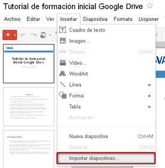
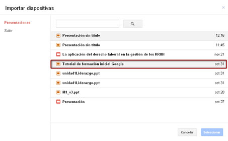
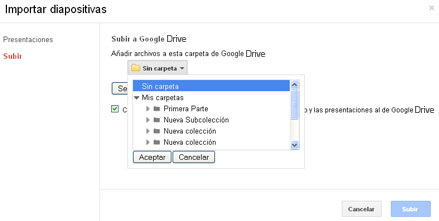
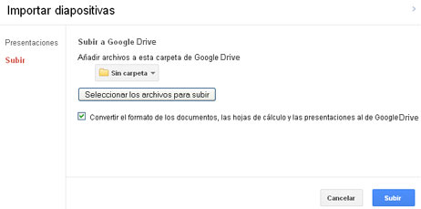
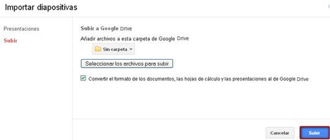
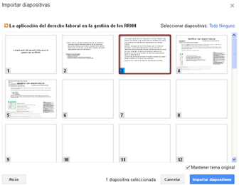

La aplicación nos permite subir al sistema archivos con extensión .ppt o .pps. Podremos trabajar con archivos no creados en su origen con esta aplicación. También es posible importar diapositivas que ya estén creadas desde una presentación a otra.
En el menú Insertar, elegiremos la opción Importar diapositivas... Aparecerá entonces un cuadro de diálogo.

Primero elegiremos en la pestaña Presentaciones el archivo al cual queramos insertar las diapositivas que tengamos ya creadas en otra presentación.

Pasaremos al siguiente paso: pincharemos la pestaña Subir y seleccionaremos la carpeta en donde queramos subir el archivo.

A continuación seleccionaremos el archivo del que deseemos importar las diapositivas. También podremos marcar la casilla si queremos convertir el formato del archivo al de la aplicación.

Una vez hecho esto, pulsaremos Subir. El sistema comenzará a cargar el archivo.

Pasaremos entonces al siguiente paso, donde podremos seleccionar las diapositivas que deseamos incluir en nuestra presentación pinchando sobre ellas. Para finalizar pincharemos en Importar diapositivas. Las diapositivas aparecerán insertadas en la presentación elegida.
